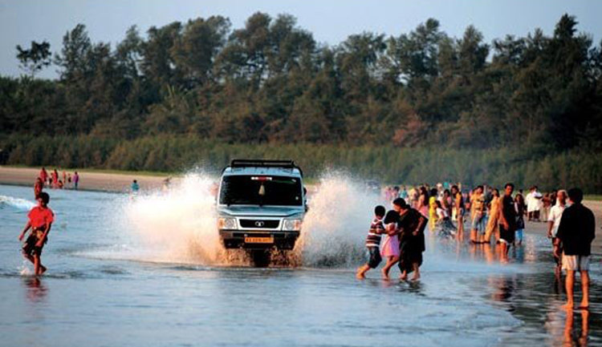

St Angelo's Fort

Muzhupilangad Beach

Kannur is said to be the ancient port of Naura, from whose shores King Solomon's ships collected timber to build the great temple of Jerusalem. Known even to the Greeks, the Romans and the Arabs, Kannur's trade links go back a long way. Acclaimed by celebrated traveller Marco Polo as the great emporium of the spice trade, this nature-rich land has been a key contributor to the cultural, religious, political and industrial heritage of the State. Bounded by the Western Ghats in the east and the Lakshadweep in the west, Kannur showcases its remarkable history in the ancient forts, old shrines and august cultural and educational institutions.